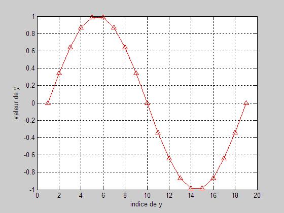
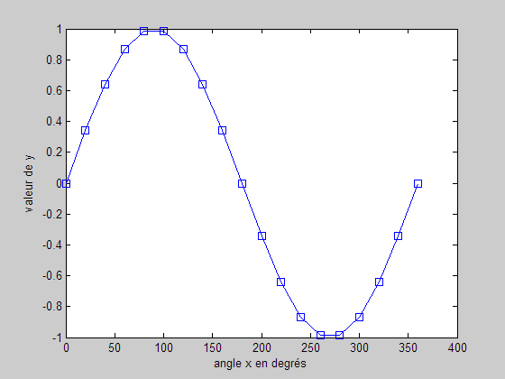

LireTracerSindX
clear; clc; close all; matrice = load('0angleSind.txt'); x = matrice(:,1); y = matrice(:,2); figure(1); % Affiche fig. 1 plot(y,'^-r'); grid on; grid on; % grillage sur la fig. ylabel('valeur de y') % en ordonnée xlabel('indice de y') % en abscisse

figure(2); plot(x,y,'-sb'); ylabel('valeur de y') % en ordonnée xlabel('angle x en degrés') % en abscisse
